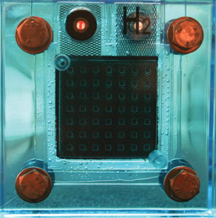

Module 2—Talking Energy
 Explore
Explore
 Read
Read
In the previous lesson you learned about activation energy, the energy required to initiate a chemical reaction. You considered the combustion of hydrocarbons and the energy required to “activate” molecules. You learned that once the reacting particles have reached the necessary activation energy, the chemical reaction, in this case a combustion reaction, can occur.
In Module 2 Lessons 1 and 2, you learned that molecules need to have sufficient energy and must collide in the correct orientation in order for the bond between atoms in the reactants to be broken and for new bonds to form. For some chemical reactions, the energy required to initiate chemical change can be quite high. As you learned in Lesson 1, reactions with higher activation energies tend to occur more slowly. If you are depending on a reaction, and need it to occur quickly, how can you overcome the problem of a high activation energy slowing your reaction rate?

© chiara levi/iStockphoto
You may have learned about fuel cells in previous science courses. Many fuel cells appear to use a reaction that looks like a combustion reaction. For example, the hydrogen-oxygen fuel cell used in the space program relies on the reaction 2 H2(g) + O2(g) → 2 H2O(l).
This reaction is also the basis for a hydrogen “pop” test you may have performed in previous science courses. When performing a hydrogen pop test, a burning splint is placed into a test tube containing a small quantity of hydrogen gas. As you learned earlier, the flame serves as a source of energy. The energy helps the reactants achieve the activation energy required for the reactants to engage in collision and form the products of the reaction.
In the space program hydrogen and oxygen are the reactants in a fuel cell—a device that converts chemical potential energy into electrical energy. The electricity produced by the fuel cells in a spacecraft run all the major systems inside the spacecraft including lighting, communication, and life support. Due to the risk of explosion, the reaction between hydrogen and oxygen cannot involve a spark flame, but it still requires an input of energy to proceed. How can this be done without a flame?
catalyst: a substance that reduces the energy necessary to start a chemical reaction
Catalysts are substances that increase the rate of a chemical process but are not consumed during the process.
Look at the fuel cell pictured. You will see a membrane in the middle of the cell. The chemical reaction between hydrogen and oxygen in the fuel cell occurs on this membrane. Using a structure like this allows the reaction between hydrogen and oxygen to occur without the need for any more energy than the gases already have at room temperature. Since the membrane in a fuel cell allows the reaction between hydrogen and oxygen to occur with a lower activation energy, the membrane acts as a catalyst.
A catalyst is something within a chemical system that lowers the activation energy required for a reaction to occur by allowing an alternate path for the reaction. This last point is very well demonstrated by the fuel cell membrane, since the membrane acts to physically separate the hydrogen and oxygen gases, meaning they never actually collide with one another. By using a catalyst, a different mechanism for the reaction occurs, and the product H2O(l) is made.
Many industrial processes, including the production of biodiesel, involve the use of catalysts. In industrial settings catalysts are often used because they increase the rate (speed) of a reaction without being consumed in the overall process. Often, they also allow a reaction to occur at a lower temperature than would otherwise be possible.
Read pages 535–538 in the textbook. Stop reading when you get to the section “Catalysts and the Nature of Science.” As you read this section, pay special attention to the explanation of how a catalyst affects the changes to the potential energy in a chemical system as a reaction occurs.
 Self-Check
Self-Check
SC 1. Complete “Practice” questions 1–4 on page 535 of the textbook.
Self-Check Answers
Contact your teacher if your answers vary significantly from the answers provided here.
SC 1.
Practice 1.
Development of catalysts has primarily occurred using empirical knowledge involving investigations that appear to try conditions and identify changes needed to improve the reaction rate.
Practice 2.
The catalytic converter and catalytic cracking towers in petroleum refining are examples of technological inventions that involved the use of catalysts.
Practice 3.
Photosynthesis, fermentation, and cellular respiration are natural (biological) processes that involve the use of catalysts. Many other examples exist as most biological reactions involve the use of enzymes as a catalyst.
Practice 4.
Since enzymes are a type of catalyst they are not changed by the chemical reaction. Since enzymes catalyze many reactions, they do not have to be present in large numbers to improve the efficiency of a chemical process in the body. If poisoned, the reaction rate will be dramatically affected since very few enzyme molecules exist. The resulting rate of reaction will be dramatically reduced due to fewer catalyzed reactions.
Read
You might wonder how catalysts are able to reduce the activation energy, which increases the rate of a chemical reaction, and still not be consumed in the process. Read the section “Theoretical Explanation of Catalysts” on pages 536–538 in the textbook.
The effect catalysts have on chemical systems is of great importance to many industries. Read the sections “Catalysts and the Nature of Science” and “Uses of Catalysts” on page 538–541 in the textbook.
 Try This
Try This
TR 1. Read the four points made in the “Summary” section on page 541 of the textbook. For each of the four points listed, provide some elaboration explaining why each of these statements made about catalysts is true. You may choose to provide an explanation or an example from the textbook or these course materials in a written, audio, or some other format.
Post a copy of your response to TR 1 to the discussion area for your class. Read the responses of at least two other students. Provide feedback to the students on their responses to help them ensure that their understanding of catalysts and their action is clear and thorough. Revise your response based on the feedback you receive. Save a copy of your revised response in your course folder.
Self-Check
SC 2. Complete “Section 12.3” questions 1–6 and 9 on page 542 of the textbook.
SC 3. In addition to completing the “Section 12.3” questions listed above, explain how your answers to these questions will help you determine the desirability of burning biodiesel as a fuel.
Self-Check Answers
Contact your teacher if your answers vary significantly from the answers provided here.
SC 2.
Section 12.3 1.
Same: the reactants, products, potential energy (position of reactants and products on a potential energy diagram), overall enthalpy change
Different: activation energy, rate (speed) of reaction, reaction intermediates, activated complex that occurs during the reaction
Section 12.3 2.
a. C and D
b. A, B, and E
c. F
d. 2 A + B + E → F
Section 12.3 3.
a. The activation energy for the forward reaction is 60 kJ.
b. The activation energy for the reverse reaction is 95 kJ.
c. The enthalpy change for the forward reaction is −35 kJ.
d. The enthalpy change for the reverse reaction is +35 kJ.
e. The forward reaction is exothermic.
Section 12.3 4.
If only 55 kJ of kinetic energy were available, the reactant molecules would rebound without reacting successfully.
Section 12.3 5.
In the reverse direction, a collision with kinetic energy equivalent to 55 kJ would also result in rebound and an unsuccessful reaction.
Section 12.3 6.
The following are examples of catalysts providing solutions to technological problems:
- The catalytic converter in a vehicle’s exhaust system reduces air pollution by catalyzing the reduction of NO(g) and NO2(g) to harmless N2(g).
- Catalysts are used in the refining of petroleum to increase production of the more desirable fractions by catalytic reforming or alkylation.
- In the upgrading of bitumen to synthetic crude, catalysts are employed during the hydrocracking and hydrotreating processes.
- In the brewing industry, the enzyme in yeast is used in the conversion by fermentation of sugar to ethanol.
Section 12.3 9.
Risks
- Burning fossil fuels is the biggest contributor to global warming through the dramatic increase in CO2 levels in the atmosphere.
- Fossil fuels are non-renewable, so the world will eventually face shortages.
- The crude oil could be put to better use making petrochemicals instead of being burnt.
Benefits
- Crude oil continues to be less expensive than other sources of energy.
- Canada has a secure supply of crude oil and bitumen for the foreseeable future.
- Crude oil is the most practical and convenient source of liquid fuels for vehicles.